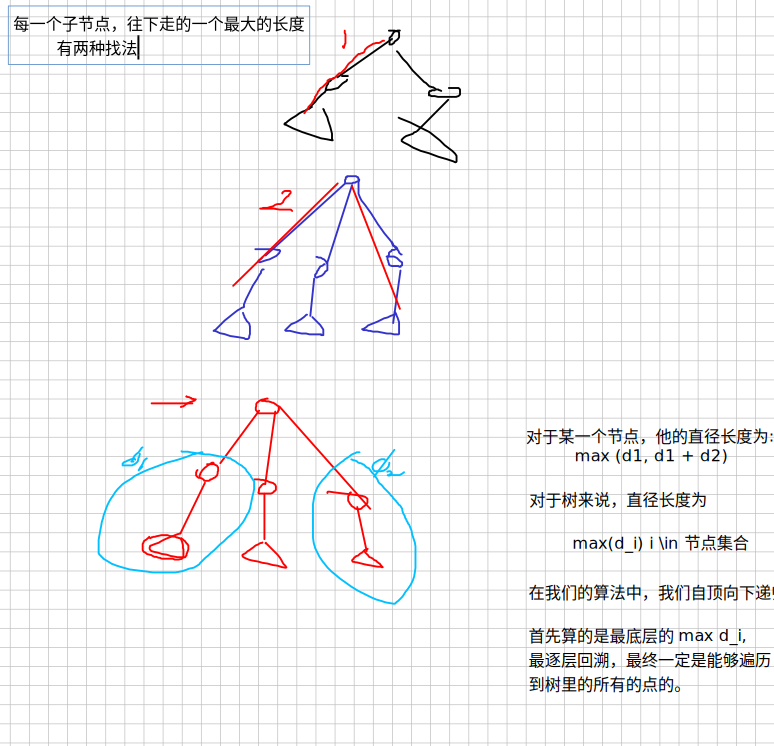
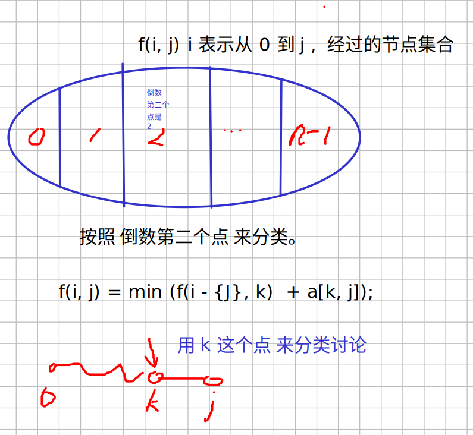

算法笔记
${toc}
1e5 is 100000 bushi 10000 n, n != n, m != & == i & n
无向边，有向边
常用工具
- 前缀和
| Property | Explaination |
|---|---|
| 功能 | 可以在 \(\Theta (1)\) 时间内求一段区间的和 |
| 用法 | sum[i] = sum[i - 1] + a[i] |
- 滑动窗口
- 输入输出
public static void main(String[] args) throws Exception {
BufferedReader br = new BufferedReader(new InputStreamReader(System.in));
BufferedWriter bw = new BufferedWriter(new OutputStreamWriter(System.out));
String[] values = br.readLine().split("\\s+");
n = Integer.parseInt(values[0]);
m = Integer.parseInt(values[1]);
List<Integer> distinctSortedAlls = all.stream().distinct().sorted()
.collect(Collectors.toList());
int aftIdx = Collections.binarySearch(distinctSortedAlls, preIdx) + 1;
Arrays.fill(h, -1);
// read input
bw.write(ret + "\n");
bw.flush();
bw.close();
br.close();
}
}
输入输出加速
public static StreamTokenizer in = new StreamTokenizer(new BufferedReader(new InputStreamReader(System.in), 32768));
public static PrintWriter out = new PrintWriter(new OutputStreamWriter(System.out));
public static double nextDouble() throws IOException {
in.nextToken();
return in.nval;
}
public static float nextFloat() throws IOException {
in.nextToken();
return (float) in.nval;
}
public static int nextInt() throws IOException {
in.nextToken();
return (int) in.nval;
}
public static String next() throws IOException {
return in.sval;
}
public static long nextLong() throws Exception {
in.nextToken();
return (long) in.nval;
}
字符串hash

p[0] = 1;
for (int i = 1; i <= n; i++) {
p[i] = (p[i - 1] * P) % Q;
h[i] = (h[i - 1] * P + c[i]) % Q;
}
while (m-- != 0) {
int x = scan.nextInt();
int y = scan.nextInt();
int x1 = scan.nextInt();
int y1 = scan.nextInt();
long res = h[y] - h[x - 1] * p[y - x + 1];
long res1 = h[y1] - h[x1 - 1] * p[y1 - x1 + 1];
if (res == res1) {
System.out.println("Yes");
} else {
System.out.println("No");
}
}
<++>
有关 模运算的 一些模板
最大公约数
gcd short for greater common divisor
首先介绍一下 模运算 的定义。对于任意一个整数 \(n\) , 一定存在两个整数 \(k, r\) 使得以下等式成立
那么我们定义\(k\)为\(n\)除以\(p\) 的商\, \(r\)为\(n\)除以\(p\) 的余数, 这又可以表示为
- 模运算的四则运算
- 辗转相除法求 gcd
还是拿上文的等式举例
假设 \(n\) 与 \(p\) 有最大公因数 \(m\), 等式两端同时 除以 \(m\)
由于 \(n', p', k\) 都是整数, 所以 \(\frac{r}{m}\) 也是整数，也就是说 \(m\) 也是 \(r\) 的因子。
分解质因数
ArrayList<Integer> divide(long n) {
ArrayList<Integer> factors = new ArrayList<>();
for (int i = 2; i <= n / i; i++) {
if (n % i == 0)
{
factors.add(i);
while (n % i == 0) n /= i;
}
}
if (n > 1) {factors.add(x); factors.add(1); }
}
首先证明元素均为 \(N\) 的素因数：因为当且仅当 N % i == 0 满足时，result 发生变化：储存 i, 说明此时 i 可以整除 \(\frac{N}{A}\)。说明存在一个数 \(p\) 使得 \(p \cdot i = \frac{N}{A}\) 。(其中, A 为 N 自身发生变化后遇到 i 时所除的数。此 N 非 彼 \(N\) )。
其次证明 result 中的数均为素数。我们假定存在一个在 result 的合数 \(K\) , 并根据整数基本定理 \(K = K_1^{e_1} \cdot K_2^{e_2} \cdots K_n^{e_n} \cdot\), 因为 \(K_1 < K - 1\) 所以他一定会在 \(K\) 前被遍历到。有因为 while(N % k1 != 0) N /= k1，即让 \(N\) 没有了 素因子 K1， 顾遍历到 K 时，
N 和 \(K\) 已经没有整除关系了。
关于约数

数据结构
单链表
static int[] e = new int[N], ne = new int[N];
// e[i] 可以被解读为 节点 i 对应的 值 为 e[i]
// ne[i] 可以被解读为 节点 i 对应的 next 指针 指向 ne[i]
static int idx;
// idx 永远指向 下一个 存储位置
static void init() {
head = -1;
idx = 0;
}
static void insert_head(int value) {
e[idx] = value;
ne[idx] = head;
head = idx++;
}
static void remove_head() {
head = ne[head];
}
// 在下标为 k 的节点后面 插入一个 值为 value 的节点
static void insert(int k, int value) {
e[idx] = value;
ne[idx] = ne[k];
ne[k] = idx;
idx++;
}
// 删除 下标为 k 的节点后面的一个节点
static void remove(int k) {
if (k == -1) {
remove_head();
} else if (ne[k] != -1) {
ne[k] = ne[ne[k]];
}
}
模拟队列
需要注意两点
- hh 是队头， tt 是队尾
- 从数组下标的层面看，hh 是要比 tt 小（或者等于的）。
所以 判断队列是否为空的语句是
if(hh <= tt )
public class Main {
static int N = (int) (1e6 + 10);
static int[] q = new int[N]; // q is queue
static int hh = 0, tt = -1; // hh is head, tt is rear
public static void main(String[] args) {
Scanner scan = new Scanner(System.in);
int n = scan.nextInt();
while (n-- != 0){
String op = scan.next();
switch(op) {
case "push":
q[++ tt] = scan.nextInt();
break;
case "pop":
hh ++;
break;
case "empty":
if (hh <= tt) {
System.out.println("NO");
} else {
System.out.println("YES");
}
break;
case "query":
System.out.println(q[hh]);
}
}
scan.close();
}
}
Trie
功能： 可以快速在一组字符串中找到符合 某些 特殊条件 的一个或者 多个字符串
Trie 所用到的数据结构
int son[N][26]; // son[i] 可以读作 节点 i 的 孩子数组
// son[i][j] = u, 可以读作节点 i 的孩子 j 指向 u 这个节点
// 为什么是 26 因为 这里只存储小写字符，小写字符一共 26 个
int cnt[N]; // cnt[i] 读作 以 i 节点 结尾的字符出现的次数。
int idx; // idx 同样是用来分配节点
static void insert(String ss) {
int r = 0;
for (int i = 0; i < ss.length(); i++) {
int u = ss.charAt(i) - 'a';
if (son[r][u] == 0) {
son[r][u] = idx;
idx++;
}
r = son[r][u];
}
cnt[r] ++;
}
static void query(String ss) {
int r = 0;
for (int i = 0; i < ss.length(); i++) {
int u = ss.charAt(i) - 'a';
if (son[r][u] == 0) {
System.out.println("0");
return;
} else {
r = son[r][u];
}
}
System.out.println(cnt[r]);
ps: 使用数组实现 Trie 就是 CS61B 里 讲解trie 提到的 naive approach, 算法比赛可以这么写，但是如果实际开发里中 这么写 内存是要爆炸的。
最大异或和 A143
思路：
- 将整数转换为2进制数串，插入 Trie 中。(止步于此)
- 从 1 .. n 遍历， 在 Trie 中查询 与 a[i] 异或结果最大的数异或结果与 res 比较大小， 保存较大者。（可见 Trie 这个数据结构的能力是在一组字符串中，找到某个具有特殊性质的字符串）
- 输出结果
这道题的关键在于 query
A3585 最大异或和
思路： 1. 首先使用前缀和处理读入的数组，使得我们能用 \(\Theta (1)\) 的时间复杂度计算 某段区间的 异或和 2. 遍历 异或和数组 - 对于每一个数，首先在 Trie 中查找能与之产生最大异或的数 - 计算异或结果，与res比较，保存最大值 - 将该 数 插入 trie 中 - 若 \(i \ge m\) 那么从trie 中删除 sum[i - m]
如何实现删除： 1. 在插入时，为每一个节点增加一个 cnt 数据域，记录该节点下存在的字符串数目。 - 插入时 cnt++ - 删除时 cnt--
- query 时， 增加一个 判断条件 cnt[son[r][i]] > 0
二叉树的遍历
根据后序和前序构建二叉树
递归构建。 要点 1. 遍历数组下标从 1 开始比较好 2. 可以用 hash 表 存储 中序遍历 节点 与 下标的映射。因为分裂点是由 后序遍历的最后一个字母对应中序遍历的下标 确定的。 3. 将每一次函数递归的调用参数打印出来，再根据参数进行调整区间。(如果答案不正确的话)
字符串处理
循环移位找子串
判断一个字符串 a 是不是另一个字符串循环移位后的字串。
- 首先需要保证 a 的长度小于 b
- 之后令 b = b + b; 在拼接后的b串中使用 find 指令来判断 a 是否存在。
图
DFS
DFS 问题 重点在于 如何将实际问题抽象成一个 graph 抽象成图后要明确 dfs 这个函数的含义是什么，再根据这个含义想目办里加东西。
A842 排列数字
其实就是 1, 2, 3 三个节点，两两相连形成一个无向图。求这个图的所用不同的便利方式
#include <iostream>
using namespace std;
const int N = 7;
bool st[N + 1];
int path[N + 1];
int n;
// dfs 函数：打印 以 u 为 第一个数的所有路径
void dfs(int u, int cnt) {
// printf("dfs(%d, %d)\n", u, cnt);
st[u] = true;
path[cnt] = u;
if (cnt == n) {
for (int i = 1; i <= n; i++) {
printf("%d ", path[i]);
}
printf("\n");
return;
}
for (int i = 1; i <= n; i++) {
if (st[i] == false) {
dfs(i, cnt + 1);
st[i] = false;
}
}
}
int main()
{
cin >> n;
for (int i = 1; i <= n; i++) {
dfs(i, 1);
st[i] = false;
}
}
BFS
分析搜索问题主要遵循以下步骤： 1. 定义 fringe 使用的 数据结构 2. 将实际问题抽象成 代码中的 一个状态 3. 如何获取 每一个 状态的 后续状态 4. 如何判断 状态是否处于 目标状态 5. 注意不要回溯 记录搜索状态
A844 BFS
不能使用数组来存取对应节点的父节点，因为可能如果后续节点又扩展了原始节点， 那么根据我们的算法逻辑， 原始节点的父节点也会被更改。
-
定义 fringe 使用的 数据结构
queue
-
将实际问题抽象成 代码中的 一个状态
class Pair
-
如何获取 每一个 状态的 后续状态
int[] dx = {0, 1, 0, 1}, dy = {-1, 0, -1, 0};
for (int i = 0; i < 4; i++) {
int nx = front.x + dx[i], ny = front.y + dy[i];
// check if (nx, ny) legal
}
#include <stdio.h>
#define N 110
int maze[N][N]; // maze[i][j] means the value in the row i, colunm j
int d[N][N]; // means the path taken from pos(0, 0) to pos(i, j);
typedef struct {
int x, y;
} node;
node q[N * N];
int hh = 0, tt = -1;
int dx[] = {-1, 0, 1, 0};
int dy[] = {0, -1, 0, 1};
int n, m;
void bfs()
{
memset(d, -1, sizeof d);
d[0][0] = 0;
node entry = {0, 0};
q[++tt] = entry;
while (hh <= tt)
{
node top = q[hh++];
// printf("(%d %d)\n", top.x, top.y);
if (top.x == n - 1 && top.y == m - 1) {
printf("%d\n", d[n - 1][m - 1]);
return;
}
for (int i = 0; i <= 3; i++) {
int x = dx[i], y = dy[i];
node expand;
expand.x = top.x + x;
expand.y = top.y + y;
if (expand.x >= 0 && expand.x <= n - 1 && \
expand.y >= 0 && expand.y <= m - 1 && \
maze[expand.x][expand.y] == 0 && d[expand.x][expand.y] == -1) {
// printf("enqueue(%d, %d), maze %d\n", expand.x, expand.y, maze[expand.x][expand.y]);
q[++tt] = expand;
d[expand.x][expand.y] = d[top.x][top.y] + 1;
}
}
}
}
int main(void)
{
scanf("%d %d", &n, &m);
for (int i = 0; i < n; i++) {
for (int j = 0; j < m; j++) {
scanf("%d", &maze[i][j]);
}
}
bfs();
}
<++>
- 如何判断 状态是否处于 目标状态
A845 八数码
bfs 求 最短路径问题需要注意两点 1. 如何存储 队列 2. 如何记录每一个状态的距离 (也就是 这个节点是第几层展开的)
- 状态表示
- 使用字符串来表示每一个节点的状态 "123456X78"
树
A846 树的重心
何为重心： 重心是指树中的一个结点，如果将这个点删除后，剩余各个连通块中点数的最大值最小，那么这个节点被称为树的重心
通俗的来讲，就是删除树中的某一个节点后，会产生许多连通分量; 如果这个节点是重心的话，连通分量的最大值最小。
可以用 dfs 的方式来统计
dfs 的 模板如下
int dfs(int u) {
st[u] = true;
for (int j = h[u]; j != -1; j = ne[j]) {
int i = e[j];
if (!st[i]) {
dfs(i);
// 可以在这里对 dfs 得到的结果处理
}
}
}
在本题中， dfs(u) 是用来寻找 以节点 u 为根的所有子树的 节点 的数量。
dfs 就和 dp 类似，要搞清楚不同的 dfs 在不同题目下的含意是什么。
树的层次遍历
拓扑排序
有关图的性质
- 有向无环图一定能够找到一条拓扑序列
- 有环图不存在拓扑序列
所以 拓扑排序可以检测 环路
拓扑排序算法步骤:
解题需要使用到邻接表，由于官方提供的stl库效率不是很高。 我们考虑用数组来模拟邻接表。
int h[N]; // 该数组储存头节点。h[i] 可以理解为 节点 i 在邻接表中 所对应的 那一条链表的 头节点
int e[N], ne[N], idx; // 老朋友了，参见单链表
int d[N]; // 该数组储存节点的入度。d[i] 可以理解为 第 i 个节点的 入度为 d[i]
int q[N];
// 模拟邻接链表
static void add(int a, int b, int c) {
e[idx] = b; // idx.e = b
ne[idx] = h[a]; // 令 idx.next = a.head;
h[a] = idx++; // update a.head = idx;
}
核心代码
static void tsort(int n) {
for (int i = 1; i <= n; i++) {
if (d[i] == 0) {
q[++tt] = i;
}
}
while (hh <= tt) {
int front = q[hh++];
for (int i = h[front]; i != -1; i = ne[i]) {
int j = e[i]; // 并不真的需要从链表中把数删除
d[j]--;
if (d[j] == 0) {
q[++tt] = j;
}
}
}
if (tt == n - 1) {
for (int i = 0; i < n; i++) {
System.out.println(q[i] + " ");
}
} else {
System.out.println("-1");
}
}
- 没有初始化头结点数组
h[N] - 使用数组模拟队列时，没有正确对
hh和tt赋值 - 使用 优先队列 时，注意使用头文件
queue。greater是小根堆，less是大根堆 - 没能理解 数组模拟链接链表的 内涵。(请参见上文)
- 没能理解 N, M。有关图节点的数组初始化大小为 N， 有关链接链表节点大小初始化为 M
Dijkstra
适用条件
迪杰斯特拉算法适用于求正权有向图中，源点到其余各个节点的最短路径。注意：图中可以有环，但不能有负权边

算法思路：
朴素版 A849
堆优化 A850
// 遗忘
static void add(int a, int b, int c) {
e[idx] = b; // idx.e = b
ne[idx] = h[a]; // 令 idx.next = a.head;
w[idx] = c;
h[a] = idx++; // update a.head = idx;
}
static int dijkstra() {
Queue<int[]> q = new PriorityQueue<int[]>(n, (a, b) -> {
return a[1] - b[1];
});
Arrays.fill(dist, INF);
q.offer(new int[] { 1, 0 });
// init for head;
while (q.size() > 0) {
int[] t = q.poll();
int ver = t[0];
int dis = t[1];
st[ver] = true;
for (int j = h[ver]; j != -1; j = ne[j]) { // h[i] 的含义没有理解透彻 遍历邻接表
int node = e[j];
if (dist[node] > dis + w[j]) { // 会 溢出
// System.out.printf("dist[%d] = %d > t.dist = %d + w[%d] = %d\n", node,
// dist[node], dis, j, w[j]);
dist[node] = dis + w[j];
q.offer(new int[] { node, dist[node] });
}
}
}
return dist[n] == INF ? -1 : dist[n];
}
spfa
算法思路：
1488 最短距离
dijkstra 算法是求一个点 到 其他所有点的最短距离。
本题是 求所有点到 到 k 个商店的最短距离。
将这个 k 个商店 合并成一个点，就可以转化为 dijkstra 问题。
854 floyd 求最短路
- 初始化，对角线 := 0, 其他 := INF
- 读取 边长，注意有重边
- 求最小值
- 注意 k 在外层循环
- 更新思路为：直接从 节点 i 到 节点 j 会比 借助 节点 k 到节点 j 更划算吗 (i -> j compared with i->k->j)？
#include <stdio.h>
#include <string.h>
#define N 210
#define INF 0x3f3f3f3f
int g[N][N];
int n, m, k;
void floyd()
{
for (int k = 1; k <= n; k++) {
for (int i = 1; i <= n; i++) {
for (int j = 1; j <= n; j++) {
if (g[i][j] > g[i][k] + g[k][j]) {
g[i][j] = g[i][k] + g[k][j];
}
}
}
}
}
int main()
{
// 初始化，对角线 := 0, 其他 := INF
memset(g, 0x3f, sizeof g);
scanf("%d %d %d", &n, &m, &k);
for (int i = 1; i <= n; i++)
for (int j = 1; j <= n; j++)
if (i == j)
g[i][j] = 0;
// 读取 边长，注意有重边
while (m--)
{
int x, y, z;
scanf("%d %d %d", &x, &y, &z);
g[x][y] = g[x][y] < z ? g[x][y]: z;
}
// 求最小值
floyd();
// 读取询问
while(k--)
{
int x, y;
scanf("%d %d", &x, &y);
if (g[x][y] <= INF / 2)
printf("%d\n", g[x][y]);
else
printf("impossible\n");
}
return 0;
}
最小生成树
858 Prim 算法
-
初始化 dist (\(\infty\)), state (0), pre (-1);
- dist[i] 表示节点
i距离连通部分的距离为dist[i]。仅当state[i]为0时有意义 - state[i] 表示节点
i的状态为 state[i] (0 表示还未连通) - pre[i] 表示节点
i与 节点pre[i]相连。
- dist[i] 表示节点
-
将 节点 1 加入 连通集合 (dist[1] = 0, state[1] = 1);
- 循环
注意 无向边，有向边。 因为 单向连接不算连通的。

void prim()
{
dist[1] = 0;
// state[1] = true;
for (int i = 1; i <= n; i++)
{
// check point
int minn = -1, minw = INF;
for (int j = 1; j <= n; j++)
{
if (state[j] == false && dist[j] < minw)
{
minw = dist[j];
minn = j;
}
}
// printf("choose node %d with wight %d\n", minn, minw);
state[minn] = true;
//check point: update
for (int j = 1; j <= n; j++)
{
if (g[minn][j] != INF && state[j] == false && dist[j] > g[minn][j]) // == & !=
{
//printf("updateing node= %d w= %d pre= %d\n", j, g[minn][j], minn);
dist[j] = g[minn][j];
pre[j] = minn;
}
}
}
}
Dynamic Programming
动态规划分析步骤
- Define Objective function
- Identify base cases
- Write down a recurrence relation for the optimized Objective function
- What is the order of exeution
- where to look for answear
背包问题
有限集合找最值
- 状态表示 (Objective function) f(i, j)
- 集合 最主要是把目标函数的集合表示出来，然后再考虑划分
- 属性
- 状态计算
01 背包问题
完全背包问题
朴素解法 1. Define Objective function
f[n][volume] 从1到n个物品选，使得背包体积小于等于volume，所能达到的最大价值
-
Identify base cases
f[0][0] = 0,
-
Write down a recurrence relation for the optimized Objective function
-
What is the order of exeution
Down to Top
-
where to look for answear
f[n][v]

优化解法 1. Define Objective function
f[volume] 背包体积小于等于volume时，所能达到的最大价值
-
Identify base cases
f[0] = 0, 3. Write down a recurrence relation for the optimized Objective function
我们已知 (\(v\) 指代 \(v_i\)，\(w\) 指向 \(w_i\)) $$
\begin{align} f(i, j) &= \underset{0 \le k \le j / v[j]}{\text{max} } (f[i-1][v - k * v[i]] + k * w[i]) \ &= \text{max} (f(i-1, j), f(i-1, j - v) + w, \ & \qquad \qquad f(i-1, j - 2\cdot v) + 2\cdot w, \cdots , f(i-1, j - k\cdot v) + k\cdot w) \ \end{align} $$
又因为有
使用 \(f(i, j - v)\) 进行变量代换，我们可以得到化简式
$$ \begin{align} f(i, j ) &= max(f(i-1, j), f(i, j - v) + w) \end{align} $$ 4. What is the order of exeution
Down to Top
-
where to look for answear
f[v]
多重背包问题
最初无法理解 如何判断某一个物品有没有使用完
最后发现完全不需要判断，最里层的循环 (k), 已经遍历了所有可能的情况，不再需要单独跟踪。
举一个实际的例子。
假设 n = 1, v = 2 时，产生最大价值的 k 等于 aa, 而我们一共有bb 个物品 1, 那么做了上述决策后， 剩下的物品1有 bb - aa个。而 bb - aa 这个值对我们的后续决策完全没用，所以我们不需要记录，我们的选择对物品个数的影响。
朴素解法 1. Define Objective function
f[n][volume] 从1到n个物品选，使得背包体积小于等于volume，所能达到的最大价值
-
Identify base cases
f[0][0] = 0,
-
Write down a recurrence relation for the optimized Objective function
-
What is the order of exeution
Down to Top
-
where to look for answear
f[n][v]
二进制优化
将每一个物品按照 二进制 拆分, 比如假设 i 物品 有 10个
那么 s[i] = 1 + 2 + 4 + 3; 将 10 i 物品，拆分成4组新物品
for (int i = 1; i <= n; i++) {
for (int t = 1; (s[i] - t) > 0; t *= 2){
goods.push_back({v[i] * t, w[i] * t});
s[i] -= t;
}
goods.push_back({v[i] * s[i], w[i] * s[i]});
}
分组背包问题
处理方式和 多重背包问题 一模一样
整数拆分
错误解法
-
Define Objective function
\(f(n)\) 整数n 最多有多少种拆分方式 - Identify base cases
\(f(0) = 0\), \(f(1) = 1\)
- Write down a recurrence relation for the optimized Objective function\(f(n) = \sum (f(n - 2^0) + f(n - 2^1) + \cdots + f(n - 2^k))\), 其中 \(k = \lfloor \log2 (n) \rfloor\) - What is the order of execution
bottom to top - where to look for answer
\(f(n)\)
正确解法
-
Define Objective function
f(i, j) 在前i个物品里选，使得体积恰好为 j 的方法数 - Identify base cases
f[0][0] = 1 - Write down a recurrence relation for the optimized Objective function
-
What is the order of execution
Bottom to Top - where to look for answer
f[m][n] 其中 \(m = \lfloor \log2 (n) \rfloor\)
时间优化
我们已知 (\(v\) 指代 \(v_i\))
$$
\begin{align*} f(i, j) &= \sum (f[i-1][v - k * v[i]]) \ &= (f(i-1, j) + f(i-1, j - v) + \ & \qquad \qquad f(i-1, j - 2\cdot v) + \cdots ) \
\end{align*} $$
又因为有
$$
\begin{align} f(i, j - v) &= (f(i-1, j - v) + f(i-1, j - 2v) + \ & \qquad \qquad f(i-1, j - 2\cdot v) + \cdots ) \
\end{align*}
$$
使用 \(f(i, j - v)\) 进行变量代换，我们可以得到化简式
空间优化
我们可以将 f(i, j) = f(i - 1, j) + f(i, j - v) 优化为 f(j) = f(j) + f(j - v)。
这是因为我们是从小到大遍历 体积的，在计算f(j) 时, f(j - v) 已经被更新，所以 在更新 f(j) 前，
f(j) 是上一层的j (即 i-1 层), f(j- v) 已经被覆盖了，是当前层(即第 i 层)的 j - v。
由此我们发现，优化前和优化后，两个表达式是完全等价的。
总结
背包的适用场景： 有限制的选择问题
- 01 背包问题 <--> 多重背包问题 <--> 分组背包问题
- 完全背包问题

线性 dp
A898 数字三角形
路径问题，状态表示一般都用 坐标
-
Define Objective function
f(i, j), 以 坐标(1, 1) 为起点，(i, j) 为终点的路径最大值
- Identify base cases\[ f(i,j ) = \begin{cases} 0 &\qquad i = 0, j = 0 \\ -\infty &\qquad other \end{cases} \] -
Write down a recurrence relation for the optimized Objective function
-
What is the order of execution
Down to Top - where to look for answer
$$ \underset{1 \le k \le n}{\text{max} } (f(n, k)); $$
A895 最长上升子序列
-
Define Objective function
f(i), 以第i个数结尾的单调递增子序列 （个数） - Identify base cases
\(f(i) = 1 \quad (1 \le i \le n)\) - Write down a recurrence relation for the optimized Objective function
- What is the order of execution
- where to look for answer
A897 最长公共子序列
难点：不太好进行 状态表示
-
Define Objective function
f(i, j) 表示 A[1 \(\sim\) i], B[1 \(\sim\) j] 的最大公共子序列集合 - Identify base cases
f(0, 0) = 0 - Write down a recurrence relation for the optimized Objective function
-
What is the order of execution
Down to Top - where to look for answer
f(n, m)
状态转移方程解释： 集合划分方式： 根据两个字串的最后一个字符来划分
若 a[i] == b[i], 那么由 A[i], B[j] 构成的 公共子序列必定包含 a[i] 与 b[i], 问题就转化为 求 f(i -1, j -1) 的最长公共子序列
若 a[i] != b[i], 那么两个字符里面一定有一个可以抛弃的，可以对 f(i -1, j), f(i, j -1) 两种状态取 max 来转移
int main()
{
int n, m;
cin >> n >> m;
for (int i = 1; i <= n; i++) {
cin >> a[i];
}
getchar();
for (int i = 1; i <= m; i++) {
cin >> b[i];
}
for (int i = 1; i <= n; i++) {
for (int j = 1; j <= m; j++) {
f[i][j] = max(f[i - 1][j], f[i][j - 1]);
if (a[i] == b[j]) f[i][j] = max(f[i - 1][j - 1] + 1, f[i][j]);
}
}
cout << f[n][m];
return 0;
}
A899 编辑距离
难点：状态表示难以想到。 难以写出状态转移方程，不知道如何划分集合
集合划分方式： - Define Objective function
f(i, j) 表示 将 A[1 $\sim$ i] 变为 B[1 $\sim$ j] 所需要的最少步骤，
也可以理解为，经过 f(i, j)步骤后，A[1 .. i] 已经和 B[1 .. j] 完全一样
- Identify base cases
- Write down a recurrence relation for the optimized Objective function
- What is the order of execution
- where to look for answer
状态转移方程解释:
f(i, j) 可以分解为 4 个 子问题。
如果 A[1 .. i - 1] 已经和 B[1 .. j] 完全一致 （也即 经过了 f(i-1, j) 步）, 那么只需要将 a[i] 删除即可。
如果 A[1 .. i] 已经和 B[1 .. j - 1] 完全一致 （也即 经过了 f(i , j - 1) 步）, 那么只需要 增加一个 b[j] 即可。
如果 A[1 .. i - 1] 已经和 B[1 .. j - 1] 完全一致 （也即 经过了 f(i - 1 , j - 1) 步）, 如果 a[i] 不等于 b[i], 就修改一次，如果 a[i] == b[i] 不做任何操作
虽然 f(i, j) 只是一个数，但是要认真考虑其背后的意义
A1051 最大的和

-
Define Objective function
-
Identify base cases
- Write down a recurrence relation for the optimized Objective function
- What is the order of execution
- where to look for answer
树形 dp
A285 没有上司的聚会
-
Define Objective function
- \(f(u, 0)\) 从所有以u为根的子树选择，并且不选u这个点的方案数
- \(f(u, 1)\) 从所有以u为根的子树选择，并且选u这个点的方案数
(求确定的集合的最大值)
-
Identify the base case
f[u][1] = happy[u]
-
Write down a recurrence relation for the optimized Objective function
设 u 的孩子数组为v $$ f(u, 0) = sum \big( max(f(v_1, 0), f(v_1,1)) + max(f(v_2, 0), f(v_1, 1)) + \cdots \big) $$
-
What is the order of execution
Top to Down
-
where to look for answer
max(f(root, 0), f(root, 1))
A1072 最大路径和
Naive Approach, 复杂度 \(\Theta(n^2)\) 会超时
-
Define Objective function
-
f(u, 0) 以u为根节点，且不选u这个节点的路径方案数
- f(u, 1) 以u为根节点，且选u这个节点的路径方案数
(求确定方案集合的最大值)
-
Identify base cases
f(u, 1) = w[u]
-
Write down a recurrence relation for the optimized Objective function
设 u 的孩子数组为 v, 假设有 n 个孩子
-
What is the order of execution
Top to Bottom
-
where to look for answer
\(\underset{1 \le i \le n}{\text{max}}(\text{max} (f(i, 0), f(i, 1)))\)
\(Q\): 为什么上面这种算法需要遍历每一个顶点，才能找到最大值。
\(A\): 因为这里的边都是无向边，每一个节点都可以作为根节点，这和 A285 题有所不同
正确解法

区间 dp
凡是和操作数有关系的，都需要关心 dp 函数对 序列造成的影响。
A282 石子合并
-
Define Objective function
f(i, j) 将 i \(\sim\) j 之间的区间合并所需要的方案数 (也可以理解为区间\([i, j]\) 这段石子，经过 \(f(i, j)\) 步后，已经合并成一堆石子了) 求 最小值
-
Identify base cases
- Write down a recurrence relation for the optimized Objective function

-
What is the order of execution
Bottom to Top
-
where to look for answer
f(1, n)
区间dp 模板
for (int len = 1; len <= n; len++) { // 区间长度
for (int i = 1; i + len - 1 <= n; i++) { // 枚举起点
int j = i + len - 1; // 区间终点
if (len == 1) {
dp[i][j] = 初始值
continue;
}
for (int k = i; k < j; k++) { // 枚举分割点，构造状态转移方程
dp[i][j] = min(dp[i][j], dp[i][k] + dp[k + 1][j] + w[i][j]);
}
}
}
状态压缩dp
最短哈密顿路径
-
Define Objective function
\(f(i, j)\) 所有从 \(0\) 走到 \(j\) ，走过的路径存在 \(i\) 中。 求最小值
-
Identify base cases
\(Q:\) 为什么 \(f(0, 0)\) 等于 \(\infty\)
\(A:\) 按照定义, \(f(0, 0)\) 表示从起点到 0 这个点所经过的状态为 \(i\), 但是 \(i\) 的值是 \(0\) ， 表示一个点都不经过，这与事实相悖（因为到达了 \(0\) 这个节点, 所以 i 的值应该为 \(1\)） \((0 | 1 << 1 = 1)\)
- Write down a recurrence relation for the optimized Objective function

-
What is the order of execution
Bottom To Top
-
where to look for answer
f((1 << n) - 1, n)
L21A04 回路计数
-
Define Objective function
\(f(i, j)\) 从 0 到达 j 节点的 路径 储存在 i 中 求 方案总和
-
Identify base cases
- Write down a recurrence relation for the optimized Objective function
-
What is the order of execution
Bottom To Top
-
where to look for answer
\(\sum_{1 \le i \le n-1} f((1 << n) - 1, i)\)
树状数组
A3662 最大上升子序列
TLE
-
Define Objective function
f(i) 表示 \(1 \sim i\) 中以 i 结尾的最长上升子序和
-
Identify base cases
f(i) = a[i]
-
Write down a recurrence relation for the optimized Objective function
$$ f(i) = \begin{cases}
\underset{1 \le j \le i - 1}{\text{max}} (f(i), a[i] + f(j)) & \text{if } a[i] > a[j] \
a[i] & \end{cases} $$
-
What is the order of execution
Bottom To Top
-
where to look for answer
\(\underset{1 \le i \le n}{\text{max} } (f(i))\)
优化做法
线段树
Lead in
线段树用于处理 对于 数组的区间查询。比如，求 数组 l - r 范围 内的和。
build
线段树是一个二叉树，它的每一个端点都表示一段区间 (和一些区间的性质 ，min | max | sum)
我们可以采用自低向上的方式，构建线段树。从叶子节点开始, 向者根节点的方向延伸。
每一个递归的过程中，都需要使用两个孩子节点的数据去形成一个父节点。 如何合并与具体题目有关。
操作
线段树支持两种操作:
update
每一次递归都选一个方向
query
三种情况
- l r start end, start end l r 当前区间 (start end) 在 所求区间 (l, r) 之外
直接 `return` 一个无效值
-
l start end r当前区间(start end)在 所求区间(l, r)内部直接
return当前区间所保存的值 -
当前区间
(start end)与 所求区间(l, r)有交叉递归求解
区间更新
懒标记，
问题过程中遇到的问题
- 递归时要加一个判断是否为 空的条件
<<>>搞混了- 基线条件记得return
双指针算法
leetcode 3
给定一个字符串 s ，请你找出其中不含有重复字符的 最长子串 的长度。
字符串查找
KMP
kmp 算法可以在 \(\Theta(n)\) 查找 n 的子串。它的原理是，在子串查找之前，构建一个子串的 有限状态机, 用于避免回溯。
如何根据子串构建一个 DFA 呢。 DFA由状态和转换关系构成：
状态：
首先，子串的每一个字符都表示一个状态，所以 这个 DFA 的总状态数就是子串的长度，再加上最后的一个终止状态。
比如子串 aaa 的状态数就是 3 + 1 = 4
- 此处应该画出 aaa 的状态表示
转换关系： 字符表中的字符，会使得 dfa 中的状态发生转换。这种转换可以分为两类
- 匹配转换， 可以移动到下一个状态
- 不匹配转换， 向之前的状态转移
如何构建 DFA 呢？
- 初始化
首先，
0状态 如果遇到 子串下标为0的字符，那么会向 状态1进行转化。如果是其他字符，那么就保持0. 我们再考虑restart stateX 的初始值，如果在第一个字符处就不匹配，那么显然我们应该从 下标为 0 处 重新开始，所以 X 的初值为 0。
dfs[pattern[0]][0] = 1;
X = 0
- 开始预处理
对于之后的状态 i， i 从 1 开始。
- 如果发生匹配转换， 可以移动到下一个状态 (ch == pattern[i])
dfs[ch][i] = i + 1 - 不匹配转换， 向之前的状态转移
dfs[ch][i] = dfs[ch][X]
最后，利用 DFA 更新 restart state
X = dfs[pattern[i]][X]
X 构建的是 pattern[1: len] 的状态机 (这点还是难以理解)